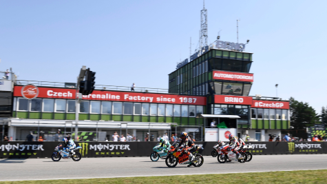
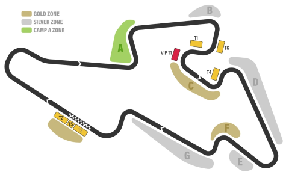
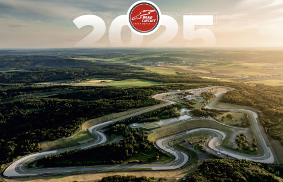

Automodrom Brno
El circuito Automotodrom Brno es uno de los actuales circuitos de la MotoGP situado en República Checa.

Características
El circuito tiene una longitud aproximada de 5.403 metros y una anchura de 15 metros aproximadamente.

Trazado del
El circuito Automotodrom Brno es uno de los actuales circuitos de la MotoGP situado en República Checa.
Carrera 2025
El circuito albergó la carrera correspondiente al 2025-07-20 a las 14:00:00.
La carrera tuvo un total de 21 vueltas. El patrocinador principal de la carrera fue Tissot

El ganador de la carrera fue Marc Márquez, con un tiempo de 40.04628 minutos
Podio
- Marc Márquez
- Marco Bezzecchi
- Pedro Acosta